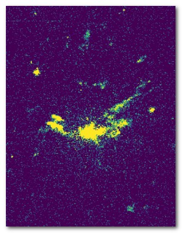

NGC 1275 is the elliptical galaxy at the center of the Perseus cluster. It also displays one of the most extended filamentary structure of ionised gas.
It is a target of interest to study the phenomena at the origin of these filaments and also gives us insights on the influence the supermassive black hole at its core could have on shaping these structures.
Previous Low Resolution Observations
Low spectral resolution (R=1800) observations of NGC 1275 were already obtained and analyzed by Dr. Marie-Lou Gendron-Marsolais in 2017 to decipher the possible origins and evolution of the gaseous filaments as well as the dynamics of the system as a whole. (See Fig. 1)
I reproduced the velocity maps of specific emission lines with the same analysis method as Dr. Gendron-Marsolais.
Goal
The main objective of my research will be to reproduce this analysis for the new high spectral resolution (R=7000) observations of NGC 1275.
Fig. 1 - Velocity Map of the Hα line for the low resolution data. (Gendron-Marsolais et al. 2019)
Observations of NGC 1275
SITELLE
The high spectral resolution observations of NGC 1275 were acquired in 2019 with the SITELLE instrument installed at CFHT.
SITELLE is a Fourier Transform imaging spectrometer which produces hyperspectral cubes of a specific region of the sky. These cubes allow us to observe the region through several wavelengths but also to recover the spectra associated with each pixels of the image.
This instrument was chosen to perform the observations of the galaxy because its wide field of view is capable of imaging the gaseous filamentary structure in its entirety.
Data Acquisition
The first low spectral resolution observations of NGC 1275 revealed several key features of the velocity structure and allowed us to produce the mapping of the entire velocity structure of the filamentary nebulae.
However, the low resolution proved itself to be unoptimal in order to perform an accurate analysis of the velocity components.
Therefore, high resolution observations were needed to resolve clearly the emission lines but also disentangle the sky lines that contaminates the observational data.
Nevertheless, with a resolution this high, the analysis becomes more complex because more features will be distinguishable and need specific attention to be accounted for.
The Analysis Problem
Analysis of High Resolution Data
The spectrum produced by SITELLE uses a Fourier transformation based on a sinc function, which shows specific lobes around the central peak.
For low resolution data, these lobes would not be resolved clearly. With high resolution data, however, they are, as shown by the comparison of the spectrum extracted from the same region of the filament system for both low and high resolution presented in Fig. 2.
Fig. 2 - Comparison of the spectrum extracted from the same region of the filament system for both low (blue line) and high (orange line) resolution.
Most of the spectral emission is contained within the lobes, therefore, we need to pursue a careful analysis in order to distinguish the elements belonging to different lines.
If they are close to one another, like in the case of the Hα line, the lobes might overlap. For low resolution they were not resolved so they could be assimilated as a singular feature.
By looking at the recovered high resolution flux for the Hα line, we can see that a careful analysis will be necessary to disentangle the background sky lines from the actual emission (see Fig. 3).

Fig. 3 - High Resolution Hα Flux Map
Future Techniques of Analysis
Machine Learning
We are currently working on a novel technique for the analysis of such data with the help of Machine Learning.
Our main goal is to determine, for each spectra, the optimal number of line-of-sight (LOS) velocity components with this new method.
This allows us to input a velocity prior to the ORCS software, which is dedicated to the analysis of SITELLE data, to obtain our results.
We could then compare single LOS component fits and multiple LOS components fits (see Fig. 4).
Fig. 4 - Line of Sight components.
Convolutional Neural Network
We will be employing a convolutional neural network currently under development in our lab and based on the STARNET architecture conceived by Fabbro et al. (2018) to validate our results (see Fig. 5).
By creating synthetic data with the help of the ORCS software, we will train and test our model before applying it to our high spectral resolution data.
Finally, in order to obtain clear flux and velocity maps, we will also develop an algorithm to efficiently remove the background noise that will be prevalent in our results.
Summary
We obtained new high resolution data of NGC 1275's filamentary nebula with SITELLE.
Because of the high spectral resolution, the analysis poses new challenges.
We will use machine learning, and especially a convolutionnal neural network, in order to perform this analysis.
References
Revealing the velocity structure of the filamentary nebula
in NGC 1275 in its entirety, Marie-Lou Gendron-Marsolais et al.
A Machine Learning Approach to Integral Field Unit Spectroscopy Observations: I. HII Region
Kinematics, Carter Rhea et al.
An application of deep learning in the analysis of stellar spectra, Sebastien Fabbro et al.
ORBS, ORCS, OACS, a Software Suite for Data Reduction and Analysis of the Hyperspectral Imagers SITELLE and SpIOMM, Thomas Martin et al.